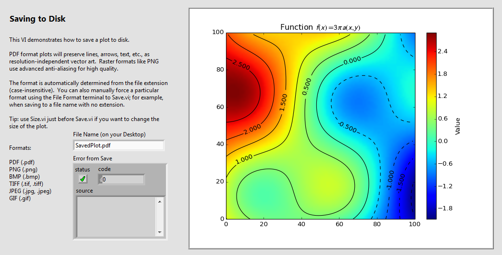

The Advanced Plotting Toolkit is an add-on package for LabVIEW™ that lets you create professional-quality
figures and plots directly from the block diagram. Plots are displayed on the front panel using full 24 bit color and
antialiasing. With a single subVI call, they can also be saved to disk in any of half a dozen standard formats, including PDF.
The Advanced Plotting Toolkit is now an open-source project! Check
out our forum at NI.com.
In addition to a complete set of standard plotting routines including
line, scatter, polar, and bar graphs, you can create advanced
visualizations including line-contour and filled-contour plots, 2D
histograms, vector arrow fields, streamline plots, and more. Plots
support text annotation, math symbols, partial transparency, alpha
blending and a variety of colormaps.
View on the front panel or save to disk in PDF, PNG, TIFF, JPEG, GIF and BMP formats.
The Toolkit is entirely self-contained and requires no installation of a
separate analysis environment like Excel™ or IDL™.
It combines advanced proprietary technology with
a fast embedded version of the industry-leading "matplotlib"
graphing library, used by thousands of scientists and engineers
worldwide.
Example/Demo VIs
Each of the screenshots below is taken from an example VI.
You can download them from the Examples page in the online manual.

Save your plots to disk with a single subVI call. That means real export functionality... not a screenshot of a control.
Get full 24-bit color and antialiasing. Export to half a dozen formats including PDF and PNG.
Even better, PDF documents will use resolution-independent vector art which looks good at any size.
Use partial transparency and alpha blending to make your data more informative. In this example VI, two histograms are plotted on the
same axes. Alpha blending lets us compare the distributions, even though they overlap. Nearly every type of plot in the Toolkit supports
alpha transparency.
No more "fake" subscripts using the underscore character. All text in your plots, from annotations to axis labels to
legend titles, supports math markup. The industry-standard LaTeX markup language is used, which goes beyond special
characters to include real math layout including integrals, vertically stacked fractions, and more.
Finally, real 2D contour plots for LabVIEW! Generate contours from any 2D array.
Add contour labels automatically, by changing a single setting. Combine with other features to make
your data come to life; in this example, they are overlaid on a colormapped array displayed with
View Array.
You aren't limited to plain contour lines. In this example, the regions between contours
are shaded according to a colormap. Combine with labelled
contour lines to get a topo-style map of your data. Or add a colorbar with a single subVI call.
Have vector or flow-field data? Display it using a field of vector arrows. Arrows aren't just
plain black... they can be colormapped according to any 2D array you provide. Like contours, you
are also free to overlay the vectors on another array visualization, or any other plot element.
For vector data representing fluid flows, consider making a streamline plot. Streamlines are
automatically generated from a pair of 2D arrays you provide, giving the X and Y components of the
vector field. Like vector arrows, the streamlines can be colormapped according to any
2D array you provide. In this example, darker colors represent faster flow speeds.
Any plot of 1D data (line, scatter, bar, histogram, etc.) can be displayed on polar axes by setting a single value when the plot is created. Polar plots are
first-class citizens in the Toolkit and have the same range of options as rectangular plots. In fact, the same plotting subVIs are used for both, so your
code doesn't even have to change. You can customize all features, including the grid lines and angle labels.
Generate a histogram plot in a single step. Supply an array of data points to
Histogram.vi and the Toolkit does the rest. Just like
a regular bar plot, all the plot attributes are customizable, including color, line widths,
data range, and more.
Finally, 2D histograms. No need to write custom code for binning or interpolation. Like regular histograms, you can create these directly
from raw data: in this case, a pair of X/Y data arrays. Great for visualizing things like beam or noise profiles, which suffer
from being forced into a 1D world.
Not your average line plot. Make fast, antialiased, customizable plots from your 1D data sets. Use linear, logscaled, or
even symmetric-log axes, which allow negative or zero values on a log scale. Choose from an array of professional-quality markers,
colors and line styles. Add error bars with a single subVI call.
Let your data speak for itself with the Toolkit's scatter plots. You're not limited to a series of fixed-sized markers. With a single additional
array you can make the marker size data-dependent, to emphasize trends in your analysis. Use color mapping to add yet another dimension to your plot.
In the above example, both are used.
Making bar plots is a breeze, including stacked, log-scaled, or negative-going bars. Not only do they support the features you'd expect, including
full customizability of sizes, colors, and line styles, they even work on polar axes!
"NI" and "LabVIEW" are trademarks of National Instruments. Neither Heliosphere Research LLC, nor any software programs or other
goods or services offered by Heliosphere Research LLC, are affiliated with, endorsed by, or sponsored by National Instruments.
"Excel" and "IDL" are trademarks of their respective owners, and no representation of
affiliation, endorsement or sponsorship is made.